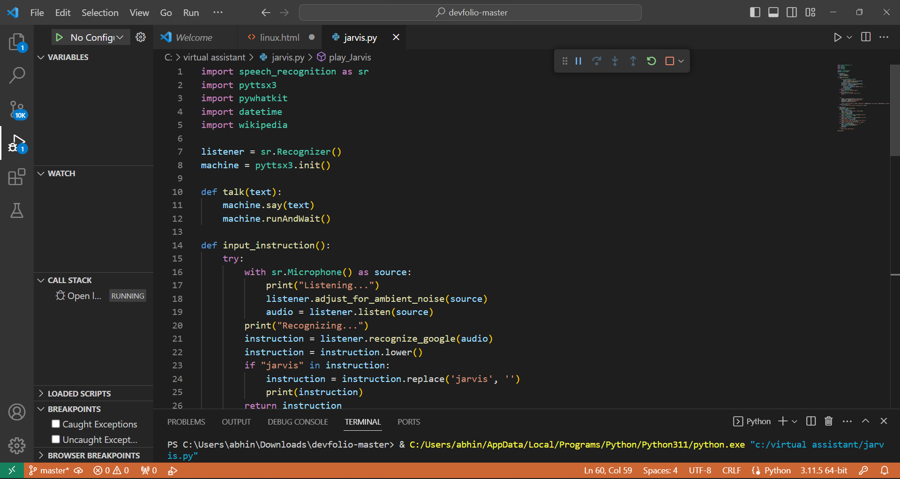
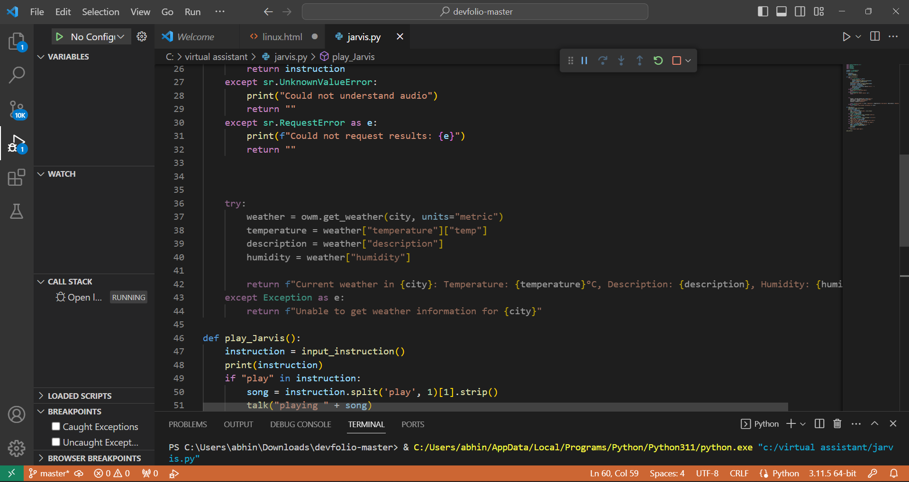
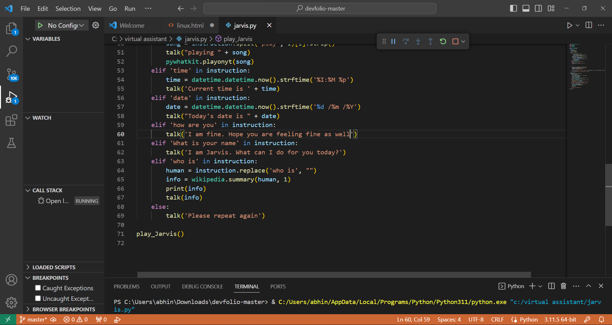
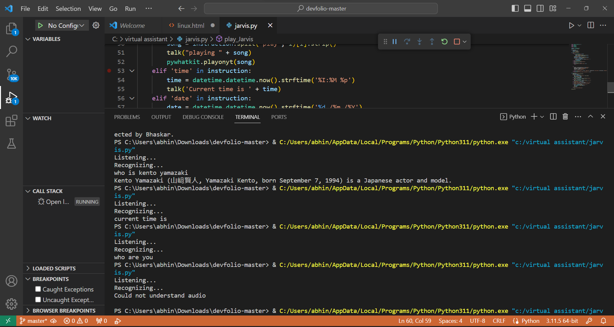

The Virtual Assistant project is an innovative demonstration of my coding skills and practical application of several Python libraries. In this project, I've created a voice-controlled assistant capable of performing various tasks based on voice commands.
Technologies Used
SpeechRecognition Library: Used to recognize and convert spoken language into text.
pyttsx3 Library: Employed for text-to-speech conversion, allowing the assistant to respond audibly.
pywhatkit Library: Utilized for searching and playing YouTube videos.
datetime Library: Integrated to provide real-time information about the current time and date.
wikipedia Library: Incorporated to enable the assistant to fetch brief summaries from Wikipedia.
Special Features
Voice Recognition:
The core of this project is voice recognition. The assistant listens for voice commands and converts them into text for further processing.
Audio Feedback:
The assistant provides audio feedback by converting text responses into speech, creating a more interactive user experience.
Command Capabilities
Play Music:
By saying "play" followed by a song name, the assistant searches and plays the requested music video on YouTube.
Retrieve Time:
Responds with the current time.
Retrieve Date:
Provides the current date.
Interaction:
Responds politely to general questions like "How are you?" and "What is your name?"
Wikipedia Search:
Can answer questions by fetching information from Wikipedia. Simply say "Who is" followed by a person's name.
Program & Execution
Now let's check out the the code I made(sorry for any inconvinience).




Conclusion
The Virtual Assistant project exemplifies coding proficiency and creativity in implementing practical applications of Python libraries. This project also showcases my ability to work with voice recognition and user-friendly interfaces.